Guide utilisateur du Ministère
Un guide pas à pas, pensé pour une première prise en main : se repérer dans l'application, instruire et décider les dossiers des entreprises, contrôler sur le terrain, suivre les organisations et préparer des rapports. Chaque étape est illustrée par une capture de l'application réelle.
Avant de commencer : 6 idées simples
Les entreprises déposent, le Ministère décide
Une entreprise envoie une demande ou une pièce (déclaration d'abattage, quittance, PAO…). Elle arrive chez vous dans À traiter. Vous l'ouvrez, vous lisez, vous décidez.
L'application vérifie avant vous
Chaque dossier affiche des contrôles automatiques déjà faits : AAC, diamètre minimum, essences protégées, pièces expirées, taxes… Vous gagnez du temps et rien n'est oublié.
Un refus s'explique toujours
Pour rejeter, un motif est obligatoire. L'entreprise le voit immédiatement dans son espace et peut corriger.
Tout laisse une trace
Chaque décision, chaque contrôle et chaque PV est daté, signé du nom de l'agent et consultable plus tard. Les documents officiels se téléchargent en PDF.
Le SNTBG reste le système national
Foresterie Numérique ne remplace pas le SNTBG : il apporte au Ministère les outils de gouvernance (instruire, décider, contrôler, suivre). Voir la section suivante.
Pendant la phase pilote
Le Ministère des Eaux et Forêts réalise toutes les actions. Chaque dossier indique l'autorité compétente (DGF, DP, DGE…), qui aura son interface dédiée plus tard.
Foresterie Numérique et le SNTBG : qui fait quoi ?
Le SNTBG (Système National de Traçabilité du Bois du Gabon) est le système officiel rendu obligatoire par l'Arrêté n° 001/MEFPECCHF/CAB-M du 3 octobre 2023. Les opérateurs y saisissent leurs opérations de terrain dans ses modules : inventaire, abattage, carnet de chantier, unité de transformation, transport, gestion des stocks, colisage, empotage et contrôle.
Foresterie Numérique se place à côté, du côté de l'administration. C'est l'outil de e-gouvernance du Ministère : il aide les agents à instruire les dossiers, décider, contrôler et suivre les organisations, avec les règles du Code forestier (Loi 016/01) et du règlement européen contre la déforestation (RDUE).
Le système national de traçabilité
- Obligatoire pour les opérateurs (arrêté du 3 octobre 2023)
- Saisie terrain : inventaire, abattage, carnet, transport, stocks, colisage, empotage
- Suit le bois de la forêt au port
Les outils de gouvernance du Ministère
- Titres, UFA, AAC et autorisations d'exploiter (art. 14)
- Pièces légales, taxes, conventions, études environnementales
- Décisions motivées, contrôles terrain et PV, anomalies
- Diligence RDUE, tableaux de bord, rapports PDF
Comment les deux travaillent ensemble
Se connecter
L'application s'ouvre dans un navigateur (Chrome, Edge, Firefox) à l'adresse foresterie-app.greenleaves.ga. Rien à installer sur un ordinateur.
- Saisissez votre adresse e-mailCelle que l'administrateur a créée pour vous, puis appuyez sur le bouton doré à droite.
- Saisissez votre mot de passeL'application affiche votre organisation pour confirmer que c'est bien votre compte.
- Vous arrivez sur l'AccueilVotre tableau de bord du jour (voir la section suivante).
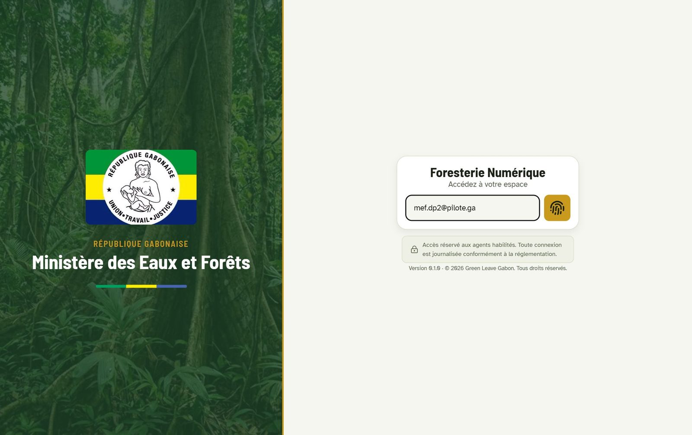
12- Le champ adresse e-mail.
- Le bouton pour continuer.
L'écran d'accueil : votre journée en un coup d'œil
L'Accueil résume ce qui demande votre attention. Lisez-le de haut en bas.
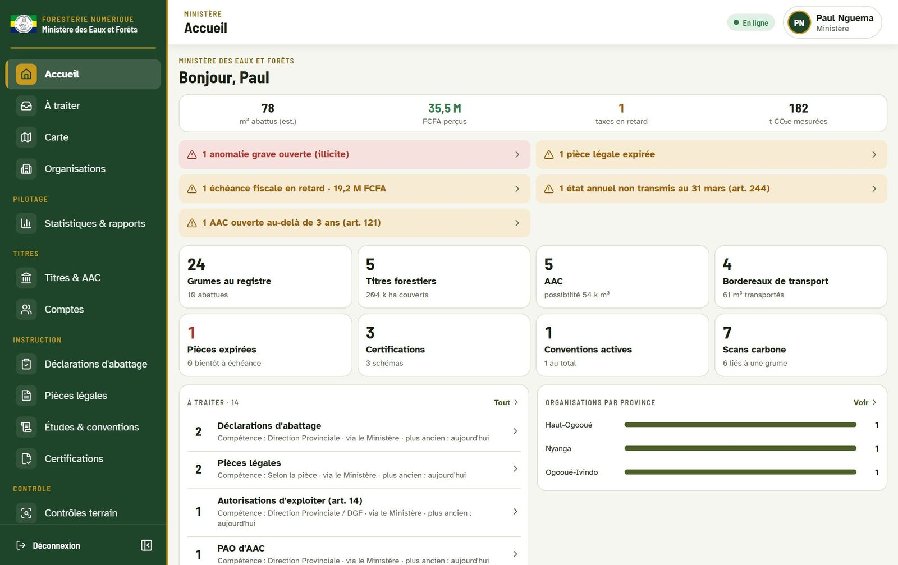
123456- Le menu : tous les espaces de travail, toujours visibles à gauche.
- Les chiffres clés : volume abattu, recettes perçues, taxes en retard, carbone mesuré.
- Les alertes : en rouge ce qui est grave (illicite), en orange ce qui est en retard. Un clic ouvre la liste concernée.
- Les tuiles : grumes, titres, AAC, transports, pièces expirées, certifications…
- À traiter : les dossiers qui attendent une décision, par type, avec l'autorité compétente.
- Votre compte : votre nom ; le voyant En ligne indique que le serveur répond.
En descendant, l'Accueil montre aussi des graphiques : taux de transformation, volumes par essence et registre des titres par statut.
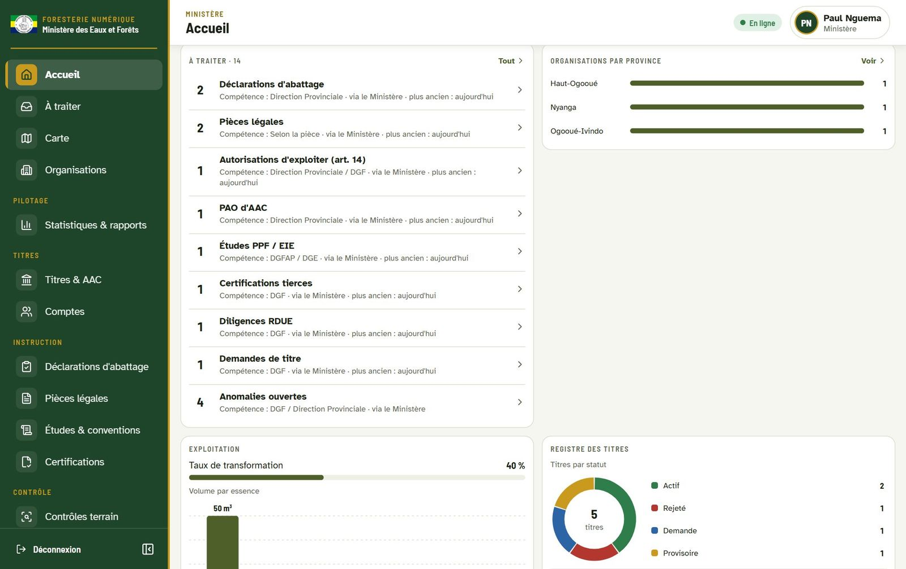
Le principe d'un dossier : les 3 couleurs
Avant de décider, l'application passe chaque dossier au crible des règles du Code forestier. Le résultat s'affiche dans le cadre Contrôles automatiques.
| Ce que vous voyez | Ce que ça veut dire | Ce que vous faites |
|---|---|---|
| Vert | Aucune non-conformité détectée. | Vous pouvez autoriser après lecture. |
| Orange · avertissement | Un point à vérifier : pièce expirée, taxe impayée, carnet DF10 non tenu, permis CITES absent, arbre dans une aire protégée… | Vous jugez : vous pouvez autoriser, demander une correction ou rejeter avec un motif. |
| Rouge · bloquant | Une règle impérative n'est pas respectée : pas d'autorisation d'exploiter (art. 14), arbre sous le diamètre minimum (DME), essence mise en réserve, arbre hors de l'AAC, code en double, arbre à préserver. | L'entreprise ne peut même pas envoyer une déclaration dans ce cas : elle est refusée au dépôt et doit corriger. Si un contrôle ✗ apparaît malgré tout sur un dossier, une note rouge vous le signale : vérifiez avant d'approuver ; en cas de doute, rejetez avec un motif. |
Décider une déclaration d'abattage
L'entreprise Bois du Haut-Ogooué déclare 2 arbres à abattre dans son AAC PILOTE-AAC 2026-1. La Direction Provinciale doit autoriser ou rejeter la déclaration.
- Ouvrez « À traiter »Dans le menu, cliquez sur À traiter. Tous les dossiers en attente s'affichent, du plus ancien au plus récent.
- Filtrez si besoinCliquez sur le type Déclarations, ou sur votre province, pour ne garder que vos dossiers.
- Ouvrez le dossierCliquez sur la ligne « Déclaration n° 9 ». La page de décision s'ouvre.
- Lisez le dossierOrganisation, province, autorité compétente, permis, AAC, nombre de pieds.
- Regardez les contrôles automatiquesIci : « Aucune non-conformité détectée ». Descendez pour voir chaque arbre : code, essence, diamètre et diamètre minimum (DME).
- DécidezCliquez sur Autoriser, ou écrivez un motif puis Rejeter.
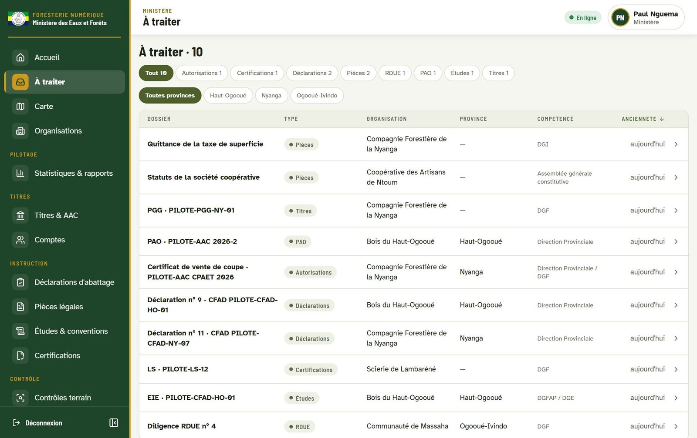
1234- Filtrer par type de dossier (le chiffre indique combien il y en a).
- Filtrer par province.
- L'autorité compétente et l'ancienneté de chaque dossier.
- Une ligne = un dossier ; cliquez pour l'ouvrir.
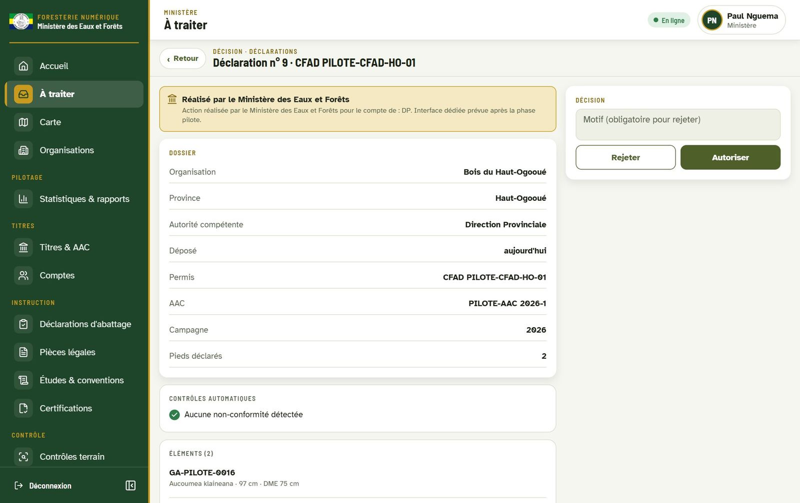
123456- Retour vers la liste.
- Rappel : pendant le pilote, le Ministère agit pour le compte de l'autorité compétente (ici la DP).
- Le dossier.
- Les contrôles automatiques.
- Le motif, obligatoire pour rejeter.
- Les boutons de décision.
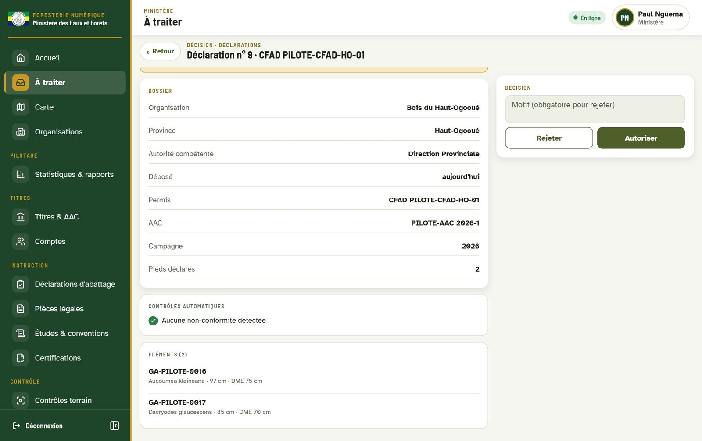
Valider une pièce légale
La Compagnie Forestière de la Nyanga a déposé sa quittance de la taxe de superficie. L'autorité compétente est la DGI.
- Ouvrez le dossierDepuis À traiter, cliquez sur « Quittance de la taxe de superficie ».
- Vérifiez les informationsPièce, référence, dates de délivrance et d'expiration, base légale (ici Loi 016/01 art. 244).
- Lisez les contrôlesIci, « Aucun fichier joint » (orange) : la pièce est déclarée mais le scan n'a pas été envoyé. « Validité en cours » (vert).
- DécidezValider, ou Rejeter avec un motif (par exemple « joindre le scan de la quittance »).
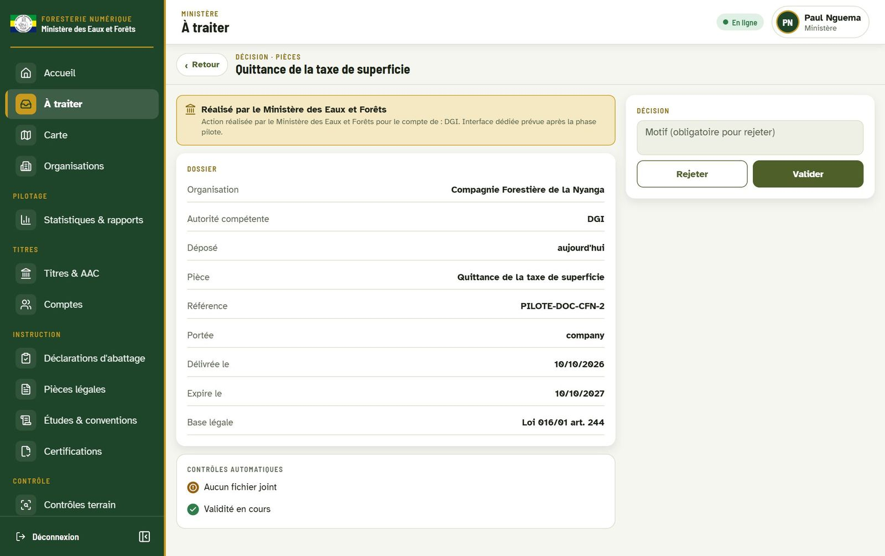
Vous pouvez aussi traiter toutes les pièces d'un coup depuis Pièces légales (groupe Instruction) : l'onglet En attente liste les pièces soumises, avec Valider et Rejeter sur chaque carte.
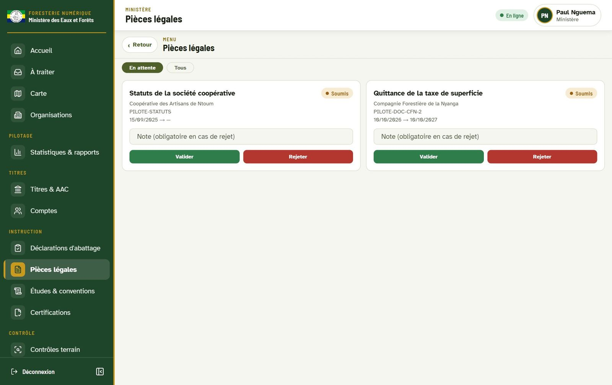
Délivrer une autorisation d'exploiter (art. 14)
La Compagnie Forestière de la Nyanga demande un certificat de vente de coupe pour son AAC PILOTE-AAC CPAET 2026. Sans autorisation délivrée, aucune déclaration d'abattage ne peut être autorisée sur cette AAC : c'est un contrôle bloquant.
- Ouvrez la demandeDepuis À traiter, type Autorisations.
- VérifiezLe type d'autorisation, l'AAC et son état (ouverte), le titre, la référence.
- Lisez les avertissementsIci : « Titre provisoire » et « Plan non joint ». Vous pouvez délivrer malgré tout ou demander le plan.
- DécidezDélivrer, ou Rejeter avec un motif.
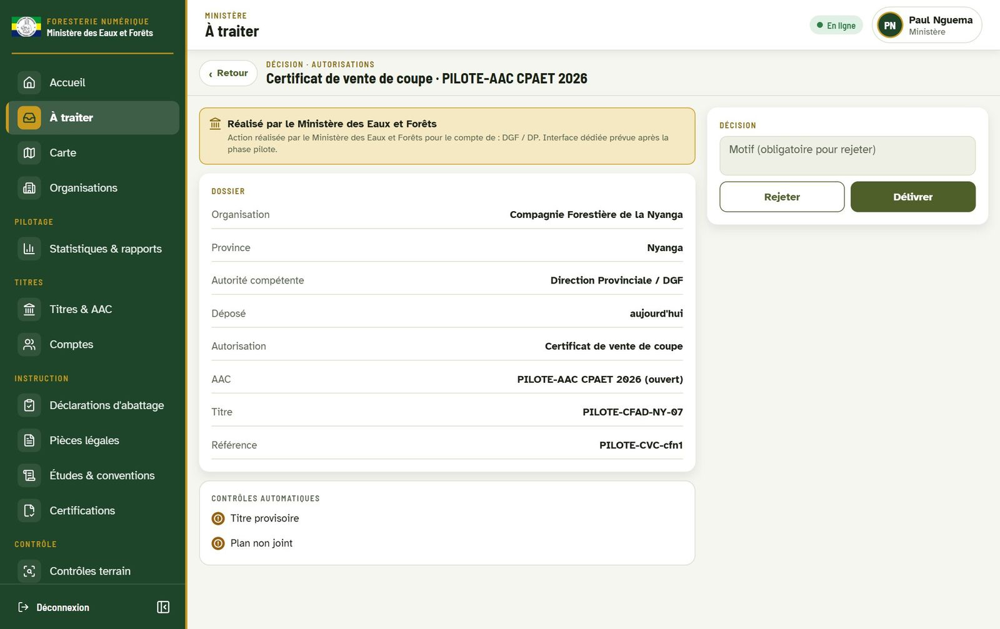
12- Deux avertissements orange : à lire, ils ne bloquent pas.
- Le bouton Délivrer.
Statuer sur une diligence RDUE (zéro déforestation)
Pour exporter vers l'Union européenne, le bois doit prouver qu'il ne vient pas d'une zone déforestée (règlement RDUE). La Communauté de Massaha soumet sa diligence pour la parcelle PILOTE-Parcelle FC 2026.
- Ouvrez la diligenceDepuis À traiter, type RDUE.
- Lisez les chiffresGrumes abattues, grumes géolocalisées, grumes hors parcelle.
- Vérifiez les 3 contrôlesParcelle cartographiée, toutes les grumes géolocalisées, aucune grume hors parcelle : les trois sont verts ici.
- DécidezValider ou Rejeter avec un motif.
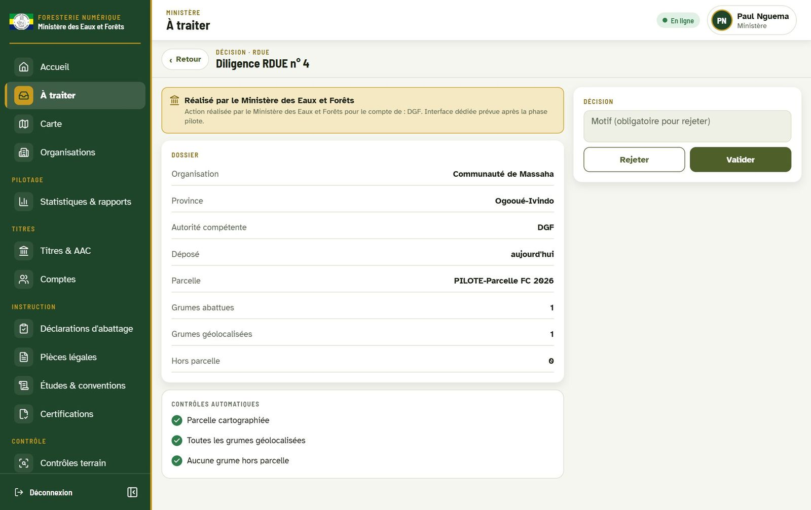
Suivre une entreprise : la fiche organisation
Vous préparez une mission chez Bois du Haut-Ogooué et voulez tout savoir : titres, comptes, conformité, certifications, inventaires.
- Ouvrez « Organisations »L'annuaire de toutes les organisations : entreprises, communautés, coopératives.
- Trouvez l'organisationTapez une partie du nom dans la recherche, ou filtrez par type et par province. La colonne État dit tout de suite si elle est À jour ou s'il manque des pièces.
- Ouvrez la ficheCliquez sur la ligne.
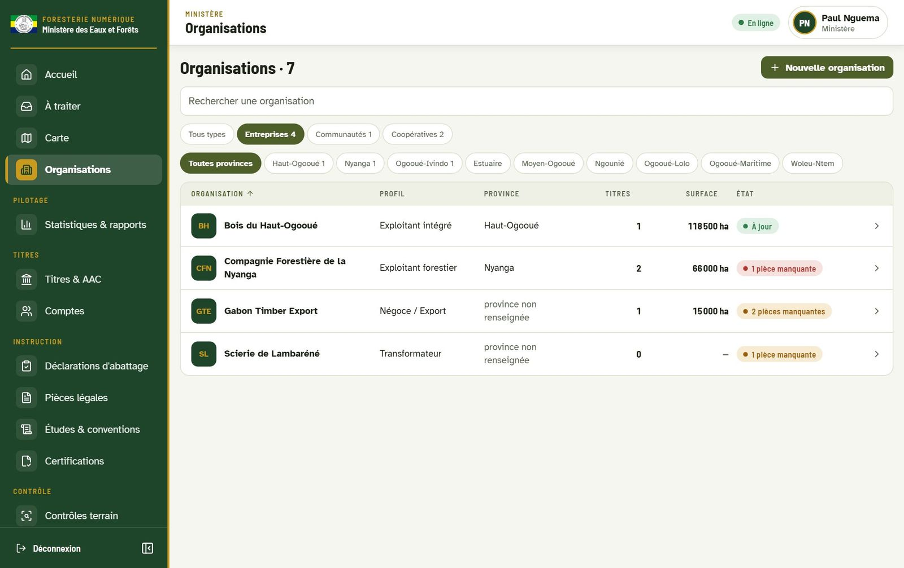
1234- La recherche.
- Les filtres par type puis par province.
- L'état de conformité de chaque organisation.
- Créer une nouvelle organisation.
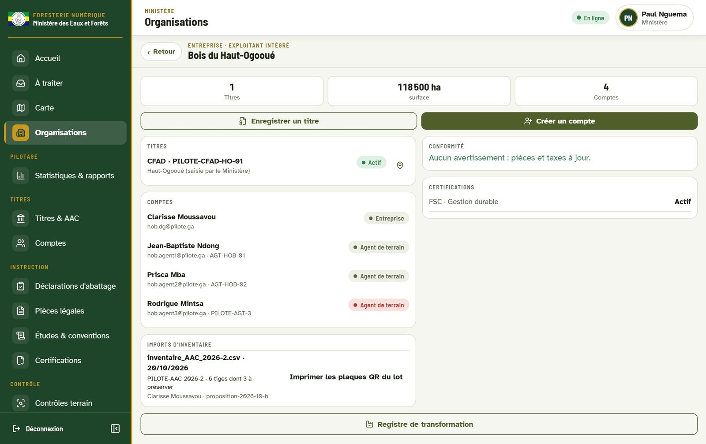
123456- Les chiffres : titres, surface, comptes.
- Enregistrer un titre et Créer un compte pour cette organisation.
- Ses titres et leur état.
- Ses comptes : dirigeant et agents de terrain.
- Sa conformité (pièces et taxes) et ses certifications.
- Ses inventaires importés, avec l'impression des plaques QR du lot.
Une coopérative et ses membres
La Coopérative des Artisans de Ntoum regroupe des entreprises et des communautés. Vous voulez voir ses membres et leurs volumes.
Sur la fiche d'une coopérative, la carte Membres de la coopérative liste chaque membre avec son adhésion, ses titres, son volume abattu, ses grumes et ses alertes. La ligne Total additionne les membres actifs.
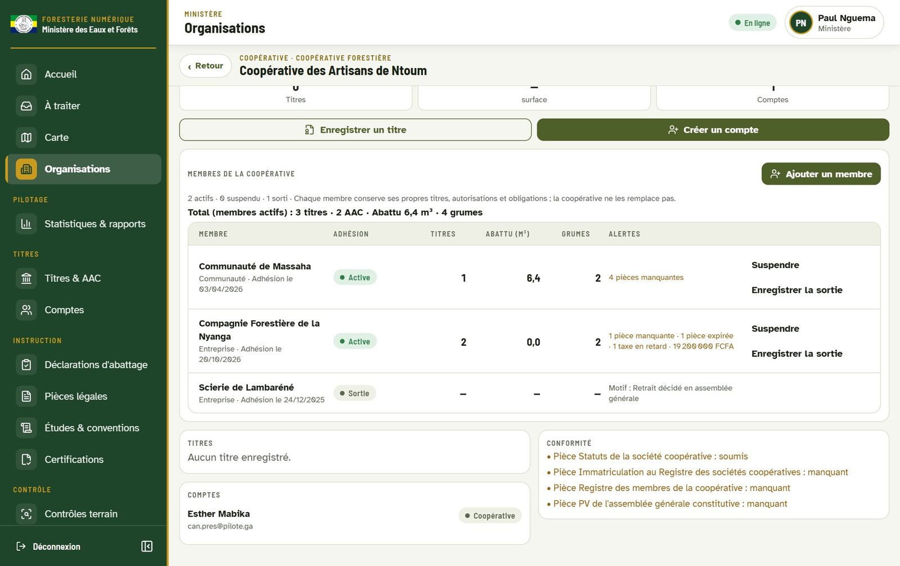
123- Ajouter un membre depuis l'annuaire.
- Le total des membres actifs.
- Suspendre ou Enregistrer la sortie d'un membre (avec un motif).
Enregistrer un contrôle terrain et son PV
Une brigade arrête un camion de grumes sur la route (contrôle en route, art. 135). Elle vérifie la plaque de la grume et le bordereau de transport.
- Ouvrez « Contrôles terrain »Groupe Contrôle. Les contrôles passés s'affichent, avec leur résultat et leur PV.
- Cliquez sur « Nouveau contrôle »Choisissez le type : Marquage, Visa DF10, Contrôle en route ou Transformation.
- Identifiez la grume ou le bordereauTapez le code, ou scannez le QR code avec la caméra (bouton vert), puis la loupe pour rechercher. L'application affiche ce qu'elle sait : statut, propriétaire, bordereau.
- Indiquez le résultatConforme, Avec réserve ou Non conforme. Le constat est obligatoire s'il y a une réserve ou une non-conformité.
- Ajoutez le n° de PV et enregistrezLa position GPS est ajoutée si le navigateur l'autorise.
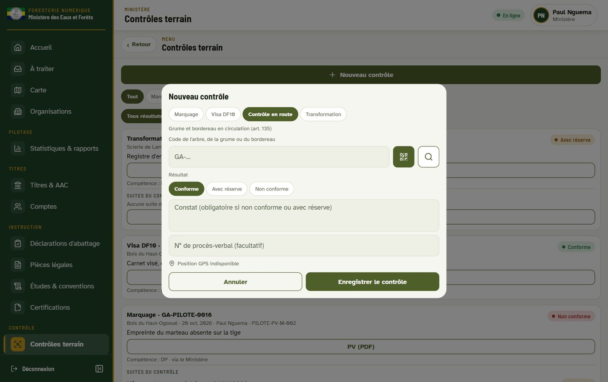
123456- Le type de contrôle.
- Le code de l'arbre, de la grume ou du bordereau.
- Scanner le QR code (vert) ou rechercher (loupe).
- Le résultat.
- Le constat.
- Enregistrer.
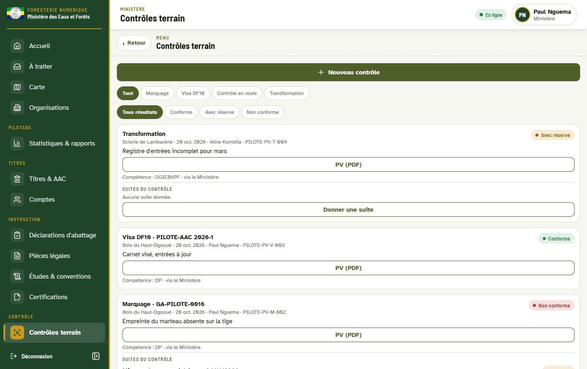
12- PV (PDF) : le procès-verbal officiel à télécharger.
- Donner une suite : mise en demeure, amende… L'entreprise la voit et peut la contester.
Traiter une anomalie
L'Accueil affiche « 1 anomalie grave ouverte (illicite) ». Vous voulez comprendre et y donner suite.
L'application détecte d'elle-même les irrégularités : document expiré, taxe impayée, CITES sans permis, contrôle non conforme, AAC ouverte depuis plus de 3 ans (art. 121), état annuel non transmis au 31 mars (art. 244)…
- Ouvrez « Anomalies »Groupe Contrôle, ou cliquez directement sur l'alerte de l'Accueil.
- Commencez par les bloquantesLe filtre Bloquantes garde les cas graves.
- Lisez la carteCe qui est en cause, l'organisation, la date de détection.
- Donnez une suiteTraiter (une action est engagée) ou Écarter (l'écart est justifié). Une note explique votre choix.
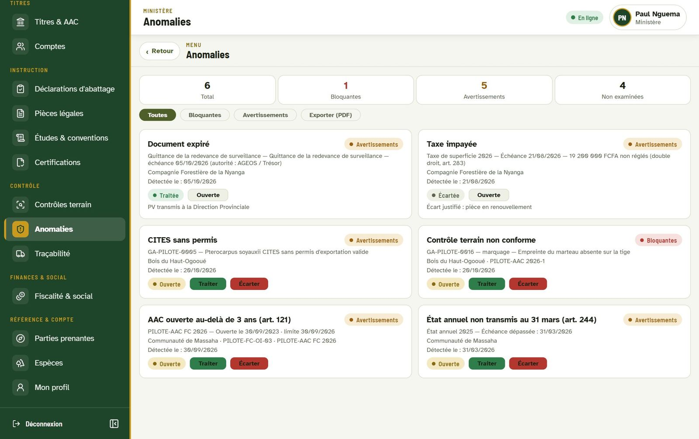
1234- Les compteurs : total, bloquantes, avertissements, non examinées.
- Les filtres.
- Exporter (PDF).
- Les boutons Traiter et Écarter.
Préparer un rapport pour la hiérarchie
Le Directeur Général demande un point sur l'exploitation, la fiscalité et le carbone pour une réunion.
- Ouvrez « Statistiques & rapports »Groupe Pilotage.
- Parcourez les indicateursArbres abattus, volume, taux de transformation, volumes par essence, gouvernance (titres, surfaces, pièces), fiscalité, CCC/FDL, transport, certifications, carbone mesuré.
- ExportezLe bouton Exporter (PDF) produit le rapport à imprimer ou à envoyer.
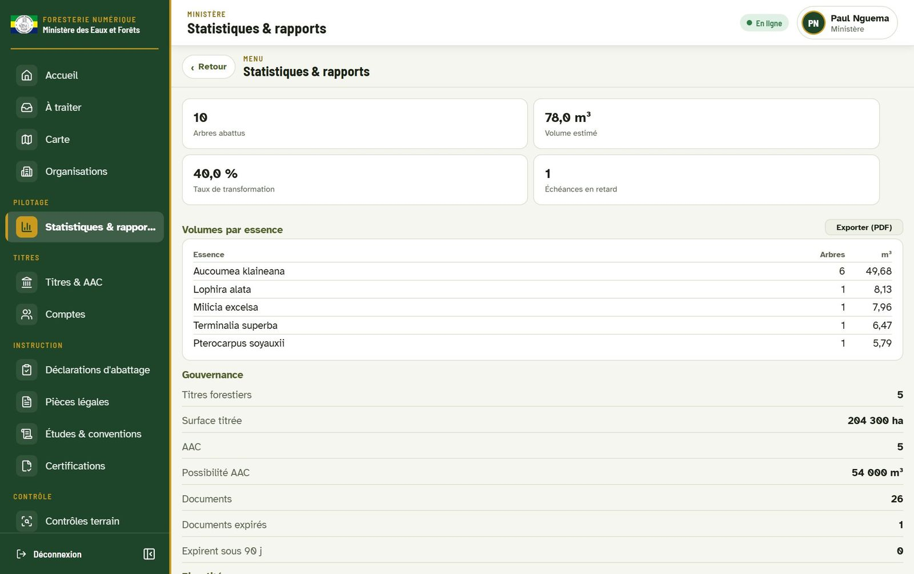
1- Exporter (PDF).
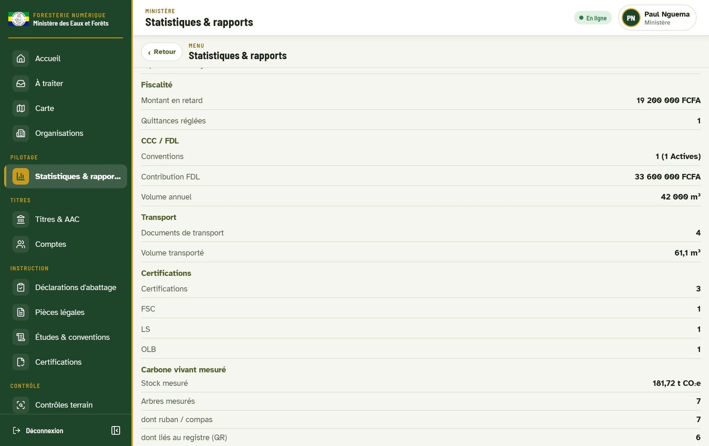
Gérer les titres forestiers et les AAC
Une demande de titre PGG est arrivée, et un titre CFAD provisoire (CPAET) attend son activation.
Dans Titres & AAC, chaque carte est un titre avec son titulaire, sa surface et son statut. Les boutons changent selon le statut :
- Demande → Exploration (autorisation d'exploration) ou Rejeter ;
- Provisoire (CPAET) → Activer quand le plan d'aménagement est approuvé, Rejeter ou Retirer ;
- Actif → Retirer si nécessaire.
Voir les UFA, AAC et autorisations déplie le détail du titre : ses unités d'aménagement, ses assiettes annuelles de coupe (AAC), leur diamètre minimum (DME) et les autorisations de l'art. 14.
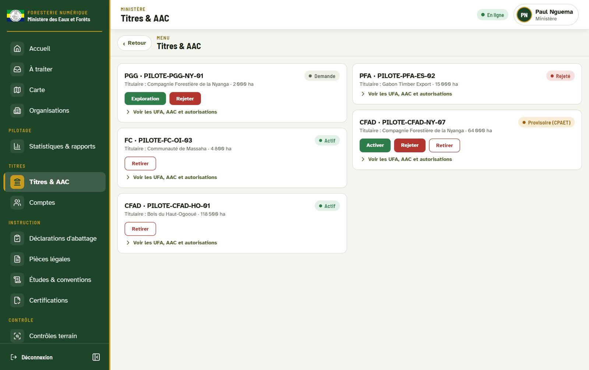
Consulter le carnet DF10 et la fiscalité
Traçabilité : le carnet de chantier (DF10)
Dans Traçabilité, l'onglet Carnet (DF10) liste chaque grume avec son numéro DF10, son essence, son diamètre, son AAC et son statut : Inventorié → Abattu → Transporté → Réceptionné → Transformé. Exporter le carnet (PDF) produit le carnet officiel. L'onglet États donne les états périodiques.
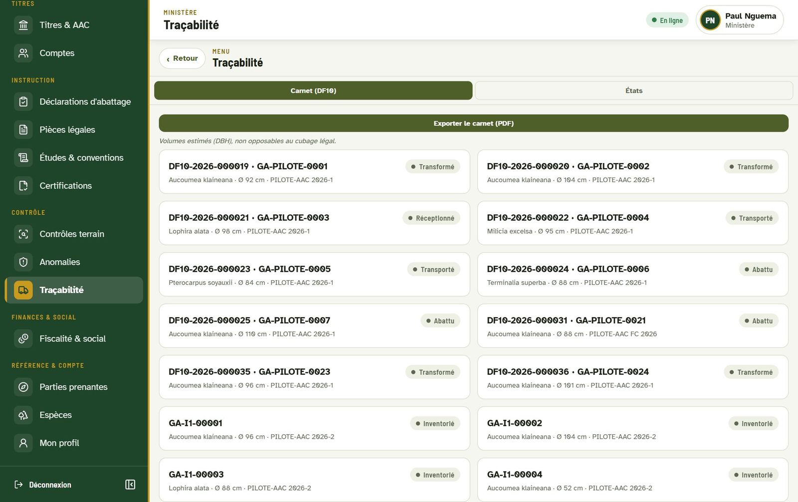
Fiscalité & social
L'onglet Échéances suit les taxes de chaque entreprise : Dû, En retard ou Payé, calculé à partir des dates et des quittances. Les onglets CCC / FDL et EUDR suivent les cahiers de charges contractuelles, le fonds de développement local et la diligence RDUE.
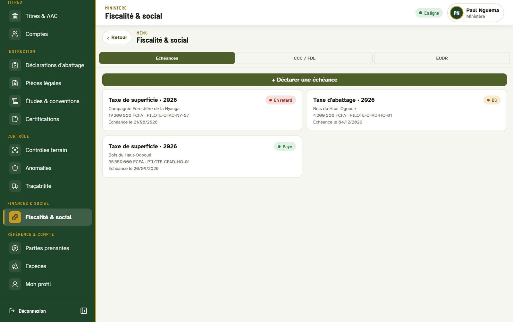
Utiliser la carte
La Carte montre les titres, les AAC, les aires protégées et les couches Global Forest Watch (pertes de couvert forestier, concessions). Elle s'adapte au zoom : plus vous zoomez, plus elle montre de détails.
- Rechercher : tapez un parc, une concession, une AAC ou un code d'arbre en haut.
- Couches : le premier bouton rond à droite choisit ce qui s'affiche et montre la légende.
- Contrôle d'un point : un appui long sur la carte vérifie le point (aire protégée, concession, perte de couvert).
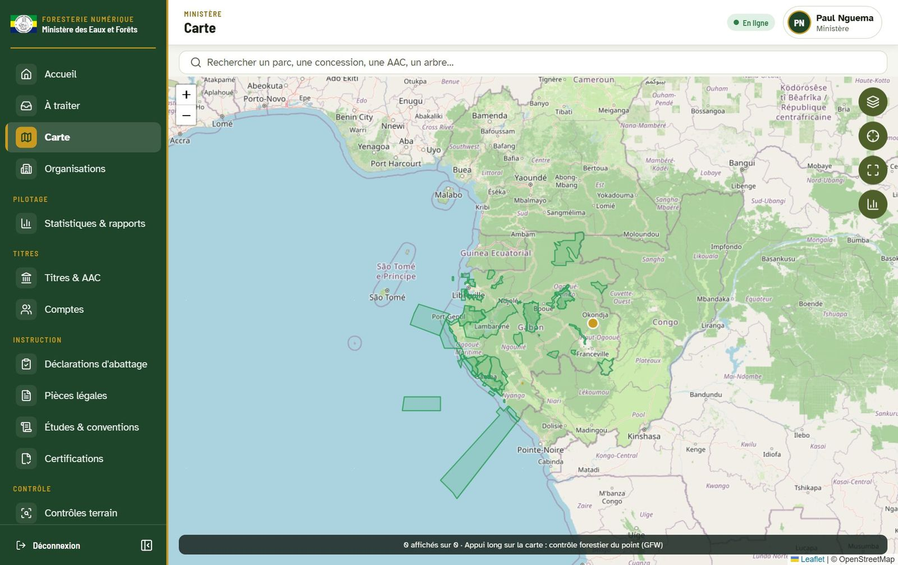
123- La recherche.
- Les boutons : couches et légende, ma position, plein écran, « Forêts du Gabon — chiffres clés ».
- Le rappel : appui long pour le contrôle forestier du point.
Savoir qui est compétent : les parties prenantes
La page Parties prenantes (groupe Référence) est la boussole du pilote. Pour chaque autorité (DGF, DP, DGFAP, DGE, ANPN, DGICBVPF, Douanes…), elle dit ce qu'elle décide, ce que le Ministère fait aujourd'hui pour elle et combien de dossiers l'attendent.
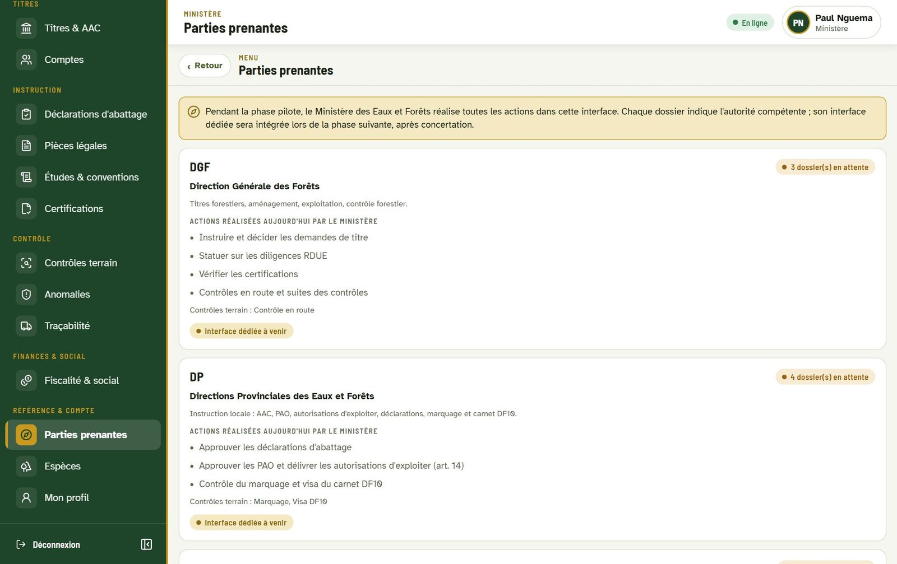
Questions fréquentes
J'ai autorisé un dossier par erreur. Que faire ?
La décision est tracée et l'entreprise est informée. Signalez-le à l'administrateur du pilote : selon le dossier, une nouvelle décision (retrait d'un titre, contrôle, suite) corrige la situation, en gardant l'historique.
Un contrôle est marqué ✗ en rouge sur un dossier. Que faire ?
C'est un point bloquant (par exemple : pas d'autorisation d'exploiter, arbre hors de l'AAC ou sous le DME). Une note rouge vous demande de vérifier avant d'approuver. Dans le doute, rejetez avec un motif : l'entreprise corrige et redépose.
Le voyant indique « Hors-ligne ».
Le serveur ne répond pas : vérifiez votre connexion internet. Les décisions ne s'enregistrent qu'en ligne.
Je ne vois que les dossiers d'une province.
Un filtre de province est actif dans « À traiter » ou « Organisations ». Cliquez sur Toutes provinces.
Où trouver un PV ou un rapport officiel ?
Chaque contrôle a son PV (PDF) ; le carnet DF10, les anomalies et les statistiques ont un bouton Exporter (PDF).
Faut-il saisir les données deux fois (SNTBG et Foresterie Numérique) ?
Non, à terme : la passerelle prévue par l'arrêté du 3 octobre 2023 (art. 9 et 10) transmettra les données du SNTBG. Pendant le pilote, les données de démonstration sont saisies directement.
Glossaire
- AAC
- Assiette Annuelle de Coupe : la zone d'un titre exploitée pendant une campagne.
- UFA
- Unité Forestière d'Aménagement : une partie du titre gérée par un plan d'aménagement.
- CFAD
- Concession Forestière sous Aménagement Durable.
- CPAET
- Convention Provisoire d'Aménagement-Exploitation-Transformation (titre provisoire).
- PAO
- Plan Annuel d'Opérations d'une AAC.
- DME
- Diamètre Minimum d'Exploitation : en dessous, l'arbre ne peut pas être abattu.
- DF10
- Carnet de chantier : le registre officiel des arbres abattus.
- Art. 14
- Les autorisations d'exploiter : certificat annuel d'assiette, permis annuel d'opérations, certificat de vente de coupe, CAE.
- CCC / FDL
- Cahier de Charges Contractuelles avec les communautés / Fonds de Développement Local.
- RDUE (EUDR)
- Règlement de l'Union européenne contre la déforestation importée.
- PV
- Procès-verbal d'un contrôle.
- GFW
- Global Forest Watch : cartes mondiales du couvert forestier.
- SNTBG
- Système National de Traçabilité du Bois du Gabon (arrêté du 3 octobre 2023).
- DGF · DP
- Direction Générale des Forêts · Directions Provinciales des Eaux et Forêts.
Un glossaire complet est aussi disponible dans l'application : Mon profil → « Glossaire & sigles ».
Essayer avec un compte pilote
Des comptes de démonstration permettent de parcourir l'application sans risque, sur des données fictives (« PILOTE »).
| Rôle | Identifiant | Mot de passe |
|---|---|---|
| Ministère · Direction Provinciale | mef.dp2@pilote.ga | Pilote2026! |
| Ministère · Brigade de contrôle | mef.brigade@pilote.ga | Pilote2026! |